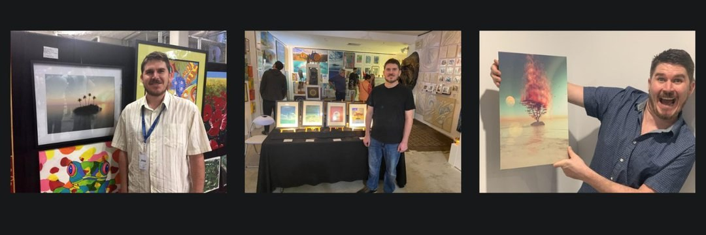

The Artist
BeLux Beyond

Bio
BeLux Beyond is the visionary art identity of Australian new media artist Jay Salton, based on the Sunshine Coast, Queensland. Working at the intersection of 3D world-building, surrealism, and digital mindfulness, he creates immersive landscape environments that exist somewhere between dream, nature, and cosmic possibility. His primary tools are E-on Software Vue, used to sculpt and render his 3D worlds, and Photoshop, where those worlds are refined, layered, and brought to their final luminous state.
His creative path began in childhood and was forged through adversity. A diagnosis of schizophrenia at eighteen, followed by years of depression and recovery, led him to art as both a survival mechanism and a form of resistance. He studied Interactive Digital Media at Qantm College / SAE Institute in Brisbane and taught himself the tools to build entire worlds from imagination. Beyondverse, his flagship collection, was formally established in 2022 and has since expanded into a body of work spanning surreal nature landscapes, portal imagery, and luminous cosmic environments.
His work has appeared in solo exhibitions at The Artists Hub Gold Coast and The Old Ambulance Station, Nambour. He is an award-winning filmmaker, winning the Micah Prize at the Out From The Mist competition in 2020 for his short film Journey From The Shadows, a personal account of psychosis and recovery. His art has been featured in Fine Art and You, Digital Journal, and reviewed by virtual world critic Inara Pey. He is also a musician, with electronic releases available across major streaming platforms.
Salton’s practice is rooted in the belief that colour and light are a form of defiance, and that beauty built from darkness is the most honest kind there is.
Artist Statement
Colour, for me, isn’t decorative. It’s structural. It’s the first language I reached for when words stopped working.
The Beyondverse is a named universe, not a portfolio. It has its own geography: bioluminescent forests, floating drift landscapes, cosmic garden edges, threshold moments caught just before crossing over. Every work is a window into a place that already exists, somewhere between nature and the impossible.
I came to this work through darkness. A period of psychosis, depression, and recovery that stripped everything back and left me with one question: what do you build when you have nothing left? Colour was the answer. Not pretty colour, not safe colour, but the kind that feels like it’s lit from inside. Neon against shadow. Rainbow against void. The kind of colour that insists on being seen.
In this body of work, colour operates as memory, as frequency, as emotional architecture. A landscape can hold grief and wonder at the same time, and the colour is what makes that legible. The surreal nature of my environments isn’t escape from reality. It’s a deeper reading of it. Nature already does the impossible. I’m just letting it.
The figure in my work, when one appears, is always witnessing. Not explaining. That’s the invitation I’m extending to the viewer too. Come in. Look. Feel whatever this stirs. You don’t need to name it.
The Beyondverse was built from the dark, lit from within. That’s not a tagline. That’s the literal truth of how it came to exist. Colour was always the way through, and it still is.
Drifters don’t just follow the Beyondverse. They inhabit it.
New drifts, world lore, and sanctuary pieces — straight to you.